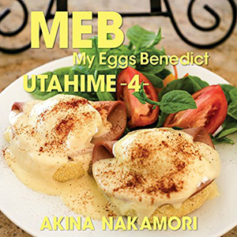

翻唱专辑：第8张
发行年份：2015年
发行日期：1月28日
| 歌名 | 作词 | 作曲 | 编曲 |
|---|---|---|---|
| スタンダード・ナンバー (南佳孝的翻唱曲) | 松本隆 | 南佳孝 | 鳥山雄司 |
| 真夜中のドア〜Stay With Me (松原みき的翻唱曲) | 三浦徳子 | 林哲司 | 森村献 |
| Lovers Again (EXILE的翻唱曲) | Kiyoshi Matsuo | Jin Nakamura | 鳥山雄司 |
| 長い間 (Kiroro的翻唱曲) | 玉城千春 | 玉城千春 | 溝口肇 |
| ハナミズキ (一青窈的翻唱曲) | 一青窈 | マシコタツロウ | 鳥山雄司 |
| 愛のうた (倖田來未的翻唱曲) | Kumi Koda | Kosuke Morimoto | 鳥山雄司 |
| fragile (Every Little Thing的翻唱曲) | 持田香織 | 菊池一仁 | 鳥山雄司 |
| 接吻 (ORIGINAL LOVE的翻唱曲) | 田島貴男 | 田島貴男 | 鳥山雄司・竹上良成 |
| そして僕は途方に暮れる (大沢誉志幸的翻唱曲) | 銀色夏生 | 大沢誉志幸 | 鳥山雄司 |
| やさしいキスをして (DREAMS COME TRUE的翻唱曲) | 吉田美和 | 中村正人 | 鳥山雄司 |
| 雪の華 (中島美嘉的翻唱曲) | Satomi | 松本良喜 | 鳥山雄司・三宅一徳 |
DVD（仅限初回限定盤）
| 歌姫4 制作映像 |
首发规格：CD: UPCH-2017，CD+DVD: UPCH-9988
唱片公司：UNIVERSAL J
排行榜：Oricon公信榜专辑周榜第5位
再发行：2017年5月3日 - UHQCD: UPCH-7286